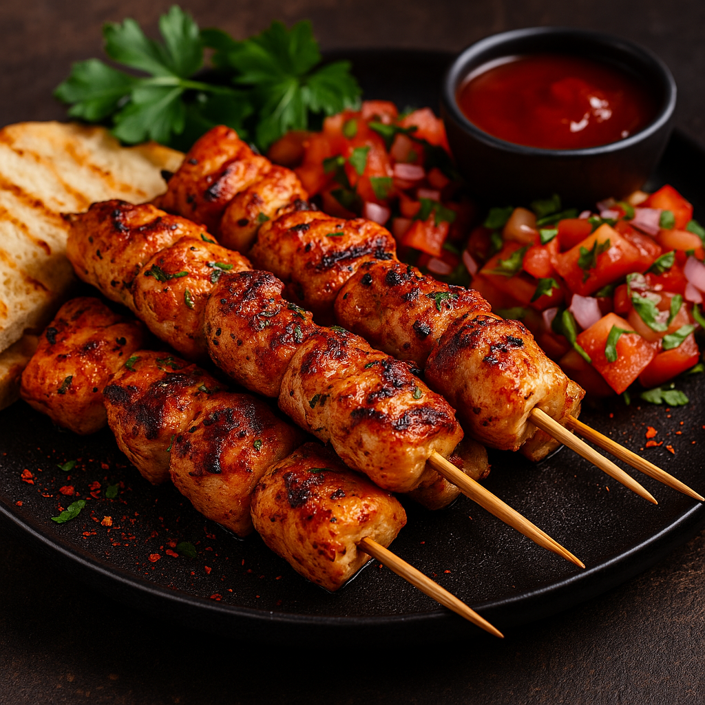

Tavuk Şiş 🍗
Süre: Hazırlık 10 dk + Pişirme 15-20 dk = Toplam 30 dk
- Malzemeler:
- 600 gr tavuk göğsü (kuşbaşı doğranmış)
- 2 yemek kaşığı zeytinyağı
- 1 tatlı kaşığı yoğurt
- 1 tatlı kaşığı limon suyu
- 2 diş sarımsak (ezilmiş)
- Tuz, karabiber, kırmızı biber, kekik

Yapılışı:
- Marine: yoğurt, zeytinyağı, sarımsak, baharat ve tuzu karıştırın. Tavuğu ekleyip kaplayın; 30 dk (mümkünse 2–3 saat) dinlendirin.
- Tavuk ve sebzeleri şişe dizin.
- Döküm tava/ızgarayı ısıtın. Şişleri orta–yüksek ateşte çevirerek 12–15 dk pişirin (tam pişene kadar).
- Yanına pilav/salata ile servis edin.
Afiyet olsun! 🍽️